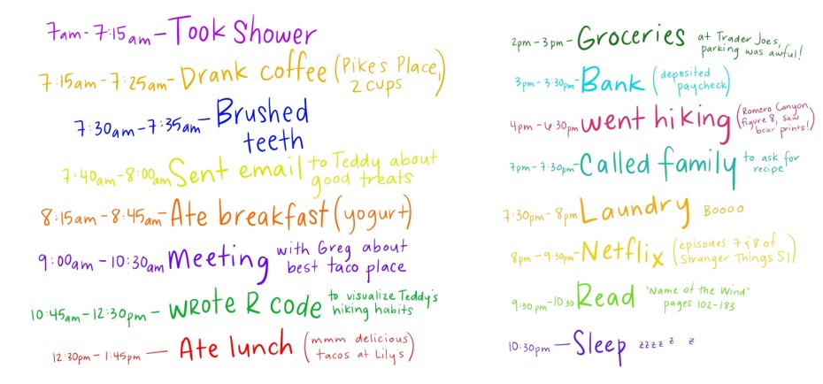
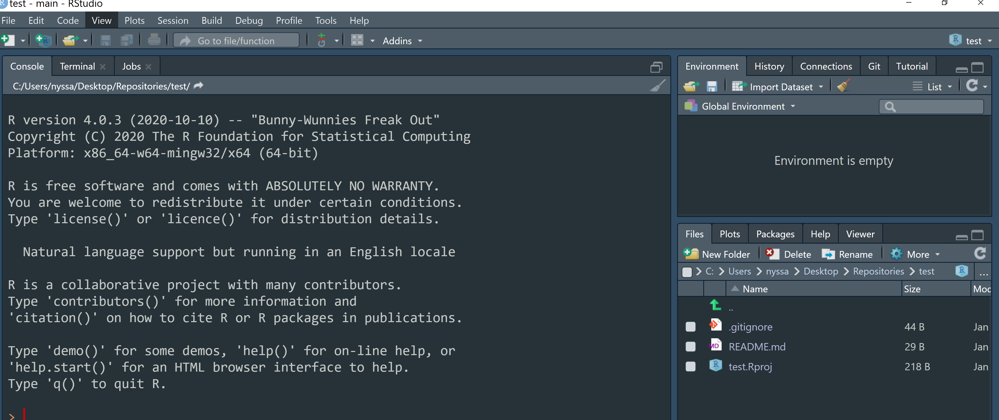

Computer Modeling (OCN 682)
What is reproducible research and why is it important?
2026-08-21
Reproducibility — what is it?
“U.S. National Science Foundation (NSF) subcommittee on replicability in science: ’reproducibility refers to the ability of a researcher to duplicate the results of a prior study using the same materials as were used by the original investigator.’”

Goodman et al., Science Translational Medicine 01 Jun 2016: Vol. 8, Issue 341, pp. 341ps12. DOI: 10.1126/scitranslmed.aaf5027
A few areas for improvement
- No clear or organized history of what’s been done to the data from raw data through final figures/results
- Lack of comments/annotation describing the steps
- Tedious & time consuming for a collaborator to recreate the analyses
- Backed up w/version control? Probably not…
- How do we transfer this into a final report or presentation? Is that reproducible?
- Note all the slides I make for this class are…. in R!

My attorney is like “bummer…”

But then! I remember I had a datebook with all this information…


But first, why open science is best science

Why some people are scared….


Work together, advance science, and don’t waste time and money
FAIR and CARE principles

Git and GitHub
Why use it?
Do you have a folder for your research project that looks like this?

Git and RStudio work well together
We will start with Rprojects to keep organized.

You have a version-controlled project!


Oh no!
- You notice that your cat walked across the screen totally screwed up your code. Oh no!

- It’s ok… you can revert it
- Click the blue wheel and then revert
- Note: commit often (it will only revert back to the last commit you made. This is like pressing the save button. Do it with every major change to your script.)